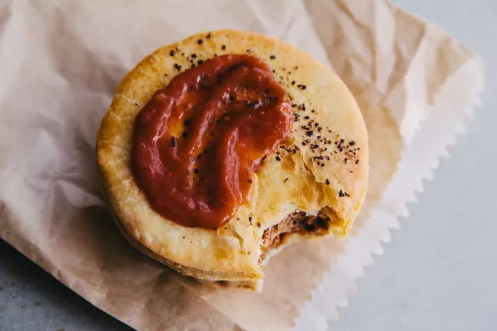

|
Melbourne, city, capital of the state of Victoria, Australia. It is located at the head of Port Phillip Bay, on the southeastern coast. The central city is home to about 136,000 people and is the core of an extensive metropolitan area—the world’s most southerly with a population of more than 1,000,000. In Australia it is second only to Sydney in population, and there is a good-natured rivalry between the two cities, to which geography and history have bequeathed diverse characteristics.Melbourne is known for being one of the most liveable cities on earth. Often referred to as ‘the Sporting Capital of the World’, besides this it is also famous for its graffitied laneways, excellent coffee, cultural diversity and bayside location.The area of Melbourne has been home to Aboriginal peoples for over 40,000 years and serves as an important meeting place for local Kulin nation clans Of the five peoples of the Kulin nation, the traditional owners of the land encompassing Melbourne are the Boon wurrung and the Wurundjeri peoples. The name Naarm is commonly used by the broader Aboriginal community to refer to the city, stemming from the traditional Boonwurrung name for Port Phillip Bay |
| 1.National Gallery of Victoria : |
|
| The National Gallery of Victoria, popularly known as the NGV, is an art museum in Melbourne, Victoria, Australia. Founded in 1861, it is Australia's oldest and most visited art museum.
The NGV houses an encyclopedic art collection across two sites: NGV International, located on St Kilda Road in the Melbourne Arts Precinct of Southbank, and the Ian Potter Centre: NGV Australia, located nearby at Federation Square. The NGV International building, designed by Sir Roy Grounds, opened in 1968, and was redeveloped by Mario Bellini before reopening in 2003. It houses the gallery's international art collection and is on the Victorian Heritage Register.
The Ian Potter Centre: NGV Australia, designed by Lab Architecture Studio, opened in 2002 and houses the gallery's Australian art collection.
A third site, NGV Contemporary, is planned to open in 2028, and will be Australia's largest contemporary gallery. |
|
| 2.Fed Square : |
| Federation Square (colloquially Fed Square) is a venue for arts, culture and public events on the edge of the Melbourne central business district. It covers an area of 3.2 ha (7.9 acres) at the intersection of Flinders and Swanston Streets built above busy railway lines and across the road from Flinders Street station. It incorporates major cultural institutions such as the Ian Potter Centre, Australian Centre for the Moving Image (ACMI) and the Koorie Heritage Trust as well as cafes and bars in a series of buildings centred around a large paved square, and a glass walled atrium. |
|
| 3.Melbourne Museum: |
| The Melbourne Museum is a natural and cultural history museum located in the Carlton Gardens in Melbourne, Australia.
Located adjacent to the Royal Exhibition Building, the museum was opened in 2000 as a project of the Government of Victoria, on behalf of Museums Victoria which administers the venue.
The museum won Best Tourist Attraction at the Australian Tourism Awards in 2011.
In addition to its galleries, the museum features spaces such as Curious?, which is a place to meet staff and find answers relating to the collections, research and behind-the-scenes work of Museums Victoria; as well as a cafe and a gift shop[citation needed]. The back-of-house area houses some of the Victoria's State Collections, which holds over 17 million items, including objects relating to Indigenous Australian and Pacific Islander cultures, geology, historical studies, palaeontology, technology and society, and zoology, as well as a library collection that holds 18th and 19th century scientific monographs and serials. The world's largest IMAX theatre screen, which is also part of the museum complex, shows movies and documentary films in large-screen 3-D format. |
|
| 4.State Library Victoria: |
| State Library Victoria acknowledges the traditional lands of all the Victorian Aboriginal clans, and their cultural practices and knowledge systems.
We recognise that our collections hold traditional cultural knowledge belonging to Indigenous communities in Victoria and around the country. We support communities to protect the integrity of this information, gathered from their Ancestors in the colonial period.
We pay our respects to their Elders, past and present, who have handed down these systems of practice to each new generation for millennia.The Library Museums and National Gallery Act 1869 formed a single body to run the Public Library of Victoria, National Gallery of Victoria (NGV), National Museum of Victoria, and the then embryotic I&T Museum |
|
| 5.Melbourne Zoo: |
| Melbourne Zoo is a zoo in Melbourne, Australia. It is located within Royal Park in Parkville, approximately 4 kilometres (2.5 mi) north of the centre of Melbourne. It is the primary zoo serving Melbourne. The zoo contains more than 320 animal species from Australia and around the world, and is accessible via Royal Park station on the Upfield railway line, and is also accessible via tram routes 58 and 19, as well as by bicycle on the Capital City Trail. Bicycles are not allowed inside the zoo itself.
The Royal Melbourne Zoological Gardens is a full institutional member of the Zoo and Aquarium Association (ZAA) and the World Association of Zoos and Aquariums (WAZA). |
|
| 1.Banh Mi: |
| Thousands of refugees settled in Melbourne after the Vietnam War, and with them came a wave of incredible Vietnamese bakeries. The baguette-bound banh mi sandwich — layered with pate, pork, mayo, cucumber, pickled carrot, daikon, and cilantro, to start — has since become a beloved lunch staple for Melbournians, especially in the predominantly Vietnamese neighborhoods of Footscray and Springvale, where you’ll be spoiled for choices. |
 |
| 2.Meat pie: |
| Visiting Melbourne between March and September? Scarfing a steaming meat pie at the Melbourne Cricket Ground is a rite of passage. The classic pie is a hand-held delicacy made of shortcrust pastry filled with diced or minced beef and gravy, best enjoyed with a vigorous squirt of tomato sauce (what Australia calls ketchup). A descendant of the British meat pie, you’ll find factory-made Australian pies like the venerable Four’n Twenty sold for a few dollars all across town. |
|
| 3.Hot jam doughnut: |
| Based on the German Berliner, the defining characteristic of this tennis ball-size doughnut filled with jam is its temperature: ripping hot, straight from the fryer. This is how Melbournians get through the winter, lining up outside an outdoor stall or converted van — the standard venues for these doughnuts — to warm themselves over a paper bag of these yeast-risen delights. |
|
| 4.Capricciosa pizza: |
|
Like New York and Chicago, Melbourne has developed its own distinct style of pizza. The pies are smaller and less floppy than in New York, and with thicker, denser crusts. Probably the most striking difference is the number of toppings Melbourne likes to pile on. The capricciosa (which is sort of, kind of based on a pizza with the same name you can find in Italy) gets olives, shredded ham, and mushrooms.. |
|
| 5.Moreton Bay bug spaghettini at Il Bacaro: |
| Melbourne is home to some outstanding modern and fine dining Italian restaurants like Tipo 00, Scopri, and Di Stasio. Longstanding Il Bacaro is one of the best. For a romantic date with yourself, find a seat at the bar, take an excellent wine recommendation, then order a bowl of their Moreton Bay bug spaghettini. Moreton Bay bugs are a species of large crustacean found in local waters that are basically all tail and not much else (imagine a lobster with no claws). Their sweet, white flesh tastes like lobster-meets-crab, and is often found on backyard grills across Australia. |
|
| 1.Drink the world’s best coffee: |
| Melbourne beat out many of the world’s most renowned coffee cities, such as Rome and Vienna, for the title; you’ll certainly know why once you see how committed Melbourne baristas are to their craft.It’s actually hard to find a bad cup of coffee in Melbourne: the city touts itself as a world leader in coffee and café culture, and the inhabitants are proud to be coffee snobs! Cafes in London even advertise that they have Melbourne baristas, as Australian and New Zealander baristas essentially brought high-quality coffee to the city. |
|
| 2.Check out the amazing street art: |
| Melbourne is very well-known for its street art, being considered one of the street art capitals of the world.
The city council has designated certain areas as approved for street artists, and the street art here is of exceptionally high quality and changes regularly; it’s a great way for budding street artists to get experience in the artistic side of graffiti, and having structured locations for this amazing creative outlet helps to reduce the levels of graffiti elsewhere, as well as adding a great urban vibe that tourists and locals both enjoy. |
|
| 3.Wander through laneways: |
| An aimless wander through the many laneways of Melbourne is a wonderful way to see what this city has to offer.
City maps are available at the Federation Square Visitor Information Centre, and many hotels; some of the most interesting laneways include Centre Place, AC/DC Lane (named after the famous Aussie rock band!), Hardware Lane and Degraves Lane. |
|
| 4.Visit Flinders Street Station and Federation Square: |
|
The main entrance to Flinders Street Station is a picturesque cultural symbol of Melbourne you’ll find on many postcards or tourist brochures: this gorgeous building was opened in 1910, and it is listed on the Victorian heritage register.
Inside you’ll find Australia’s busiest railway station, a small shopping area with tasty food options, and easy walking access to Southbank. |
|
| 5.Rock out: |
| Melbourne is famous for its live music scene, particularly rock music.
There’s plenty of bands playing at any given time, and the city attracts international talent, including of the up-and-coming variety.
It’s also the home of the legendary Australian singer-songwriter-poet-author Nick Cave.
Some popular spots to catch a band include the Corner Hotel, the Evelyn Hotel, the Spotted Mallard, the Post Office Hotel, the Ding-Dong Lounge, the Esplanade Hotel and the Palais Theatre. |
|